コアの長さを23mm、60mmの2種類で発電量を検証
弱い風でも発電できるものを目指しているので「家庭用扇風機の強の風で回り始める」ことを条件に試作品の設定をしています
コイル両端4mmは固定のためにコイルは巻いていないのでコイルの範囲は15㎜と52㎜です
コイルにはφ0.4のポリウレタン線を使用し、2種類とも9重巻きとしました（手巻きなのでバラツキ有り）
コイル一個当たり 15㎜÷φ0.4×9重＝337.5 330巻を目標
コイル一個当たり 52㎜÷φ0.4×9重＝1170 1170巻を目標
コイルはすべて直列に結線し、ダイオードブリッジで直流にしました
コイル12個を直列に結線した時のポリウレタン線の常温での抵抗値の実測値は
コア23㎜：19.9Ω
コア60㎜：68.9Ω
ダイオード：1N4007 4個
磁石の種類 コイルと反対側にヨーク ヨークからの磁気
ネオジム磁石
Φ6t3 砂鉄+エポキシ樹脂 少し有り
Φ10t3 SS400 ほぼ無し
Φ16t2.5 SS400 ほぼ無し
Φ16t2.5 無し 有り
フェライト磁石
Φ18t5 SS400 ほぼ無し
回転数
360r.p.m.、720r.p.m.、1200r.p.m.、1800r.p.m.
ギヤ比3:1、10:1の手回しで時計の秒針に目視で合わす
正確さに欠けるとは思いますが、他に選択肢がありませんでした
磁石とコギング抑制板（コア）の距離
Φ6t3以外は扇風機の強の風だけでプロペラが回り始める距離
Φ6t3は風だけで回り始めないが、回り続けることができる距離
先に実験した回転数360r.p.m.、720r.p.m.と後で実験した回転数
1200r.p.m.と1800r.p.m.とでは磁石部を付け替えたので、多少距離
は多少異なります
| 条件 | Neo6 | Neo10 | Neo16 No Yoke | Neo16 | Ferrite18 |
|---|---|---|---|---|---|
| Core 23mm（360/720rpm 共通） | 2.5 | 6 | 2.5 | 5 | 2 |
| Core 60mm（360/720rpm 共通） | 2.5 | 4.5 | 2.5 | 5 | 2 |
結果
| Resistance (Ω) | Neo6 SandIron | Neo10 SS400 | Neo16 No Yoke | Neo16 SS400 | Ferrite18 SS400 |
|---|---|---|---|---|---|
| 9910.0 | 0.2017 | 2.386 | 1.656 | 2.598 | 1.645 |
| 6740.0 | 0.1964 | 2.327 | 1.612 | 2.498 | 1.551 |
| 4745.0 | 0.1723 | 2.278 | 1.592 | 2.476 | 1.486 |
| 2128.0 | 0.1314 | 2.263 | 1.486 | 2.428 | 1.398 |
| 990.0 | 0.1251 | 2.115 | 1.394 | 2.362 | 1.318 |
| 473.4 | 0.1053 | 2.084 | 1.279 | 2.236 | 1.277 |
| 267.7 | 0.0937 | 2.051 | 1.202 | 2.138 | 1.234 |
| 197.3 | 0.0723 | 1.923 | 1.194 | 2.057 | 1.158 |
| 102.4 | 0.0635 | 1.667 | 1.082 | 1.823 | 1.03 |
| 46.4 | 0.0324 | 1.324 | 0.802 | 1.406 | 0.789 |
| 22.8 | 0.0201 | 0.995 | 0.5657 | 1.001 | 0.5397 |
| 10.6 | 0.0097 | 0.5102 | 0.3072 | 0.5376 | 0.2987 |
| Resistance (Ω) | Neo6 SandIron | Neo10 SS400 | Neo16 No Yoke | Neo16 SS400 | Ferrite18 SS400 |
|---|---|---|---|---|---|
| 9910.0 | 0.831 | 5.692 | 4.186 | 6.11 | 3.96 |
| 6740.0 | 0.806 | 5.664 | 4.083 | 6.098 | 3.912 |
| 4745.0 | 0.752 | 5.484 | 4.05 | 5.986 | 3.874 |
| 2128.0 | 0.713 | 5.423 | 3.986 | 5.602 | 3.798 |
| 990.0 | 0.652 | 5.173 | 3.845 | 5.598 | 3.602 |
| 473.4 | 0.632 | 5.139 | 3.716 | 5.386 | 3.442 |
| 267.7 | 0.5483 | 4.871 | 3.498 | 5.182 | 3.332 |
| 197.3 | 0.5236 | 4.712 | 3.394 | 5.046 | 3.104 |
| 102.4 | 0.4476 | 3.998 | 2.852 | 4.546 | 2.723 |
| 46.4 | 0.2943 | 2.912 | 2.016 | 3.08 | 1.901 |
| 22.8 | 0.1875 | 1.772 | 1.212 | 1.853 | 1.153 |
| 10.6 | 0.0996 | 0.904 | 0.627 | 0.948 | 0.5876 |
| Resistance (Ω) | Neo6 SandIron | Neo10 SS400 | Neo16 No Yoke | Neo16 SS400 | Ferrite18 SS400 |
|---|---|---|---|---|---|
| 9910.0 | 1.621 | 11.23 | 7.52 | 10.58 | 6.28 |
| 6740.0 | 1.56 | 10.85 | 7.32 | 10.53 | 6.01 |
| 4745.0 | 1.468 | 10.52 | 7.28 | 10.13 | 5.77 |
| 2128.0 | 1.334 | 10.39 | 7.03 | 10.05 | 5.55 |
| 990.0 | 1.302 | 9.62 | 6.03 | 9.14 | 5.081 |
| 473.4 | 1.078 | 7.65 | 5.067 | 7.4 | 4.073 |
| 267.7 | 0.794 | 5.934 | 3.645 | 5.497 | 3.058 |
| 197.3 | 0.691 | 4.722 | 3.017 | 4.456 | 2.486 |
| 102.4 | 0.3984 | 2.734 | 1.742 | 2.615 | 1.437 |
| 46.4 | 0.2046 | 1.326 | 0.91 | 1.241 | 0.694 |
| 22.8 | 0.1023 | 0.651 | 0.4406 | 0.6096 | 0.3434 |
| 10.6 | 0.0472 | 0.2997 | 0.2015 | 0.2812 | 0.1581 |
| Resistance (Ω) | Neo6 SandIron | Neo10 SS400 | Neo16 No Yoke | Neo16 SS400 | Ferrite18 SS400 |
|---|---|---|---|---|---|
| 9910.0 | 4.086 | 22.9 | 15.44 | 22.5 | 13.26 |
| 6740.0 | 3.945 | 22.53 | 15.02 | 21.23 | 13.01 |
| 4745.0 | 3.836 | 22.02 | 14.67 | 21.98 | 12.48 |
| 2128.0 | 3.364 | 21.46 | 13.92 | 20.66 | 11.6 |
| 990.0 | 2.953 | 17.12 | 11.67 | 16.72 | 9.62 |
| 473.4 | 2.009 | 11.52 | 7.53 | 10.97 | 6.21 |
| 267.7 | 1.365 | 7.46 | 4.812 | 7.0 | 4.023 |
| 197.3 | 1.061 | 5.694 | 3.698 | 5.378 | 3.073 |
| 102.4 | 0.5873 | 3.08 | 1.988 | 2.88 | 1.656 |
| 46.4 | 0.2726 | 1.419 | 0.841 | 1.324 | 0.759 |
| 22.8 | 0.1326 | 0.686 | 0.4162 | 0.64 | 0.368 |
| 10.6 | 0.0612 | 0.3142 | 0.1904 | 0.2929 | 0.1684 |
| Resistance (Ω) | Neo6 SandIron | Neo10 SS400 | Neo16 No Yoke | Neo16 SS400 | Ferrite18 SS400 |
|---|---|---|---|---|---|
| 9910 | 7.48 | 39.30 | 27.84 | 39.36 | 22.84 |
| 6740 | 7.08 | 36.18 | 27.06 | 37.56 | 23.65 |
| 4745 | 6.98 | 35.87 | 25.36 | 36.29 | 22.87 |
| 2128 | 6.05 | 31.58 | 21.69 | 33.38 | 19.18 |
| 990 | 4.548 | 21.98 | 15.12 | 22.49 | 13.54 |
| 473.4 | 2.634 | 12.83 | 8.66 | 12.79 | 7.59 |
| 267.7 | 1.603 | 7.70 | 5.160 | 7.68 | 4.534 |
| 197.3 | 1.203 | 5.798 | 3.875 | 5.776 | 3.391 |
| 102.4 | 0.634 | 3.047 | 2.037 | 3.041 | 1.786 |
| 46.4 | 0.2878 | 1.385 | 0.924 | 1.380 | 0.813 |
| 22.8 | 0.1390 | 0.677 | 0.4449 | 0.665 | 0.3915 |
| 10.6 | 0.0630 | 0.3047 | 0.2035 | 0.3024 | 0.1794 |
| Resistance (Ω) | Neo6 SandIron | Neo10 SS400 | Neo16 No Yoke | Neo16 SS400 | Ferrite18 SS400 |
|---|---|---|---|---|---|
| 9910 | 11.24 | 57.64 | 39.40 | 59.06 | 35.94 |
| 6740 | 10.47 | 53.82 | 38.47 | 56.61 | 33.52 |
| 4745 | 9.98 | 50.75 | 37.09 | 53.74 | 33.52 |
| 2128 | 8.57 | 41.20 | 28.09 | 41.76 | 24.40 |
| 990 | 5.386 | 25.24 | 17.14 | 25.04 | 15.12 |
| 473.4 | 2.865 | 13.52 | 9.08 | 13.45 | 7.96 |
| 267.7 | 1.672 | 7.90 | 5.310 | 7.86 | 4.652 |
| 197.3 | 1.242 | 5.884 | 3.946 | 5.858 | 3.462 |
| 102.4 | 0.646 | 3.072 | 2.057 | 3.062 | 1.805 |
| 46.4 | 0.2953 | 1.391 | 0.930 | 1.387 | 0.817 |
| 22.8 | 0.1406 | 0.669 | 0.4471 | 0.668 | 0.3931 |
| 10.6 | 0.0641 | 0.3056 | 0.2043 | 0.3051 | 0.1802 |
抵抗値–電圧グラフ
360 rpm の全データ
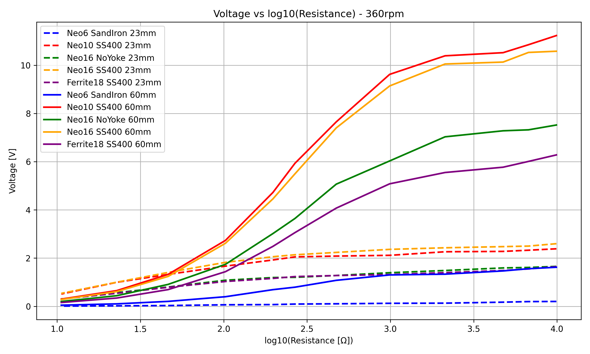
720 rpm の全データ
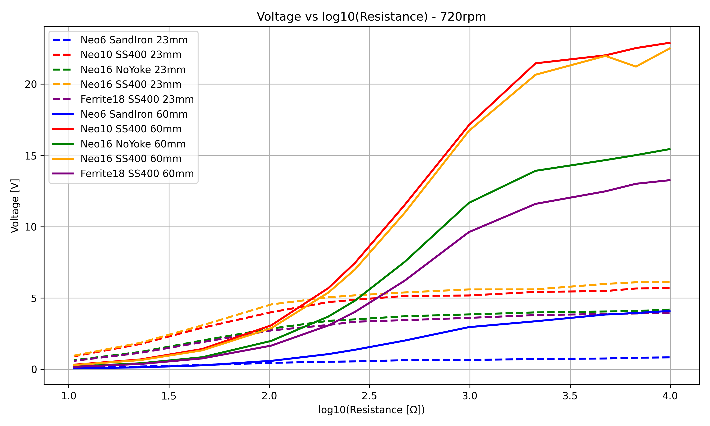
1200 rpm の全データ
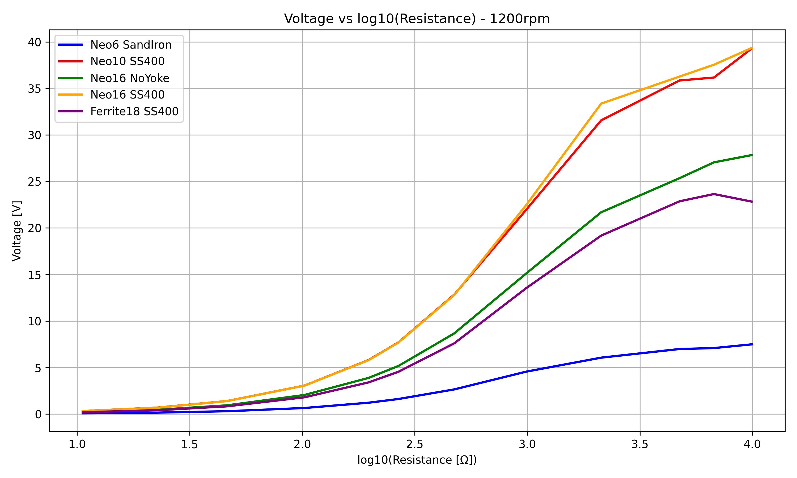
1800rpm の全データ
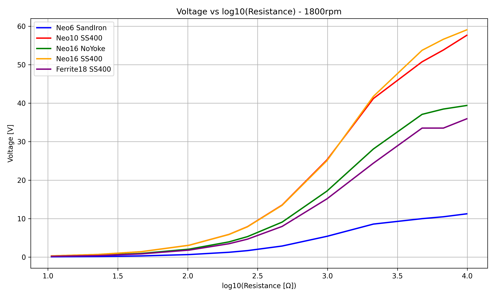
抵抗値–電力グラフ（コア60㎜）
φ6ネオジム磁石
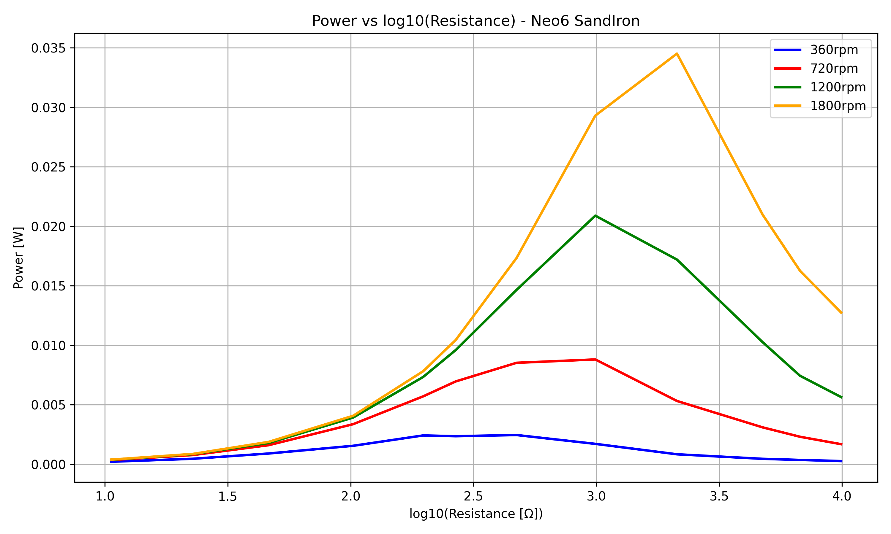
φ10ネオジム磁石
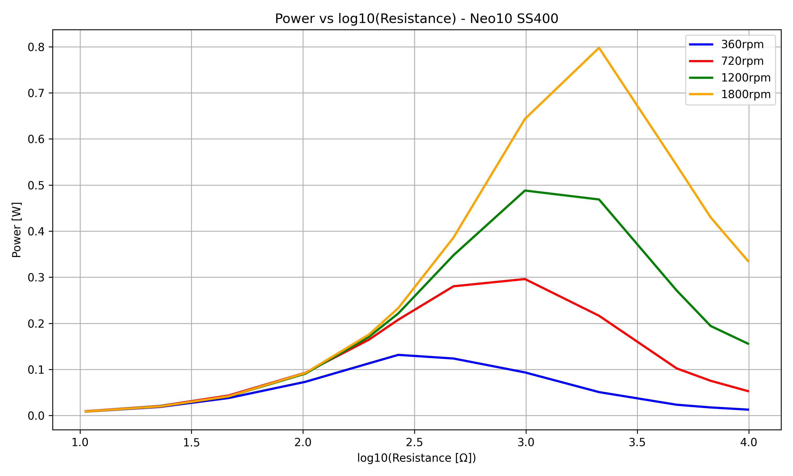
φ16ネオジム磁石 ヨーク無し
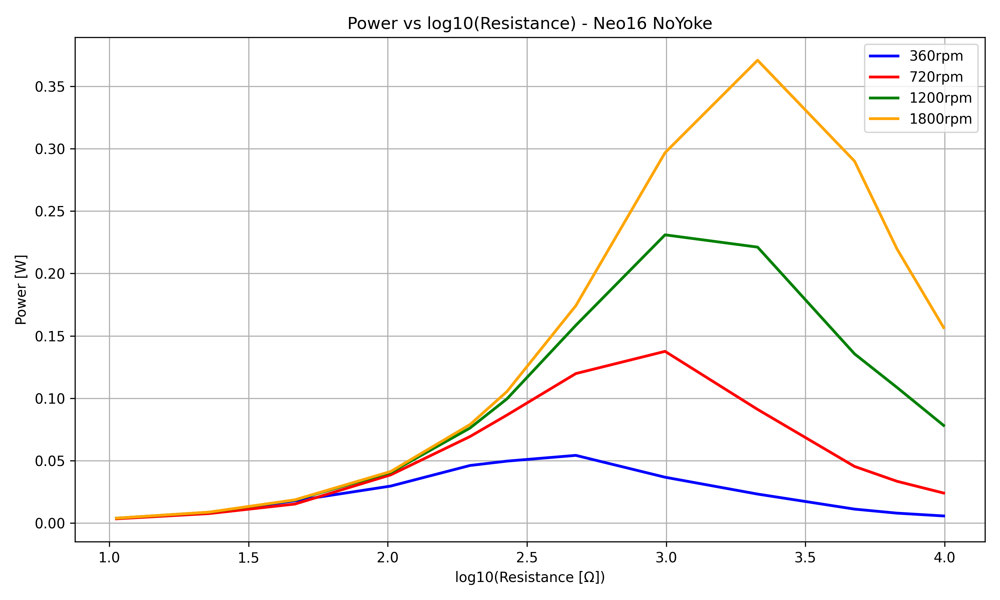
φ16ネオジム磁石 ヨーク有り
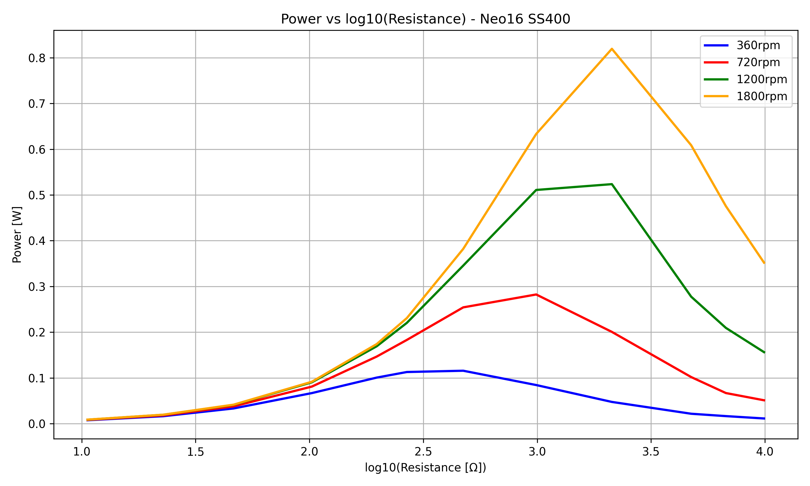
φ18フェライト磁石
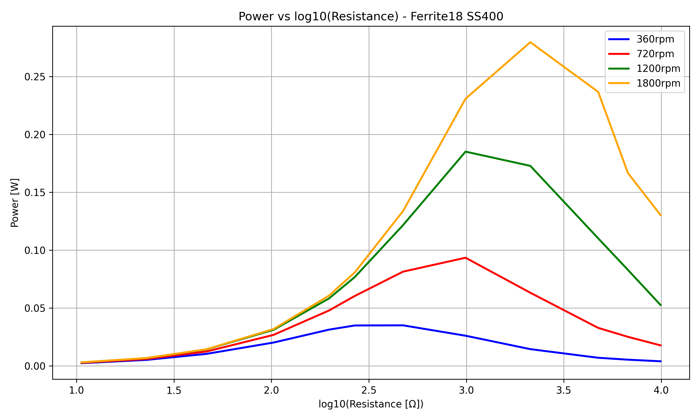
抵抗値–電力グラフ ヨークの有無による電力の比較
φ16ネオジム磁石 コア23㎜
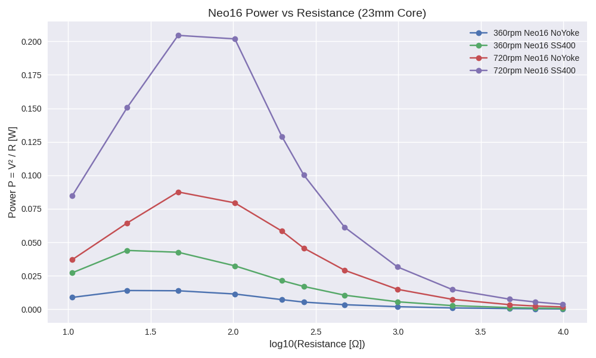
φ16ネオジム磁石 コア60㎜
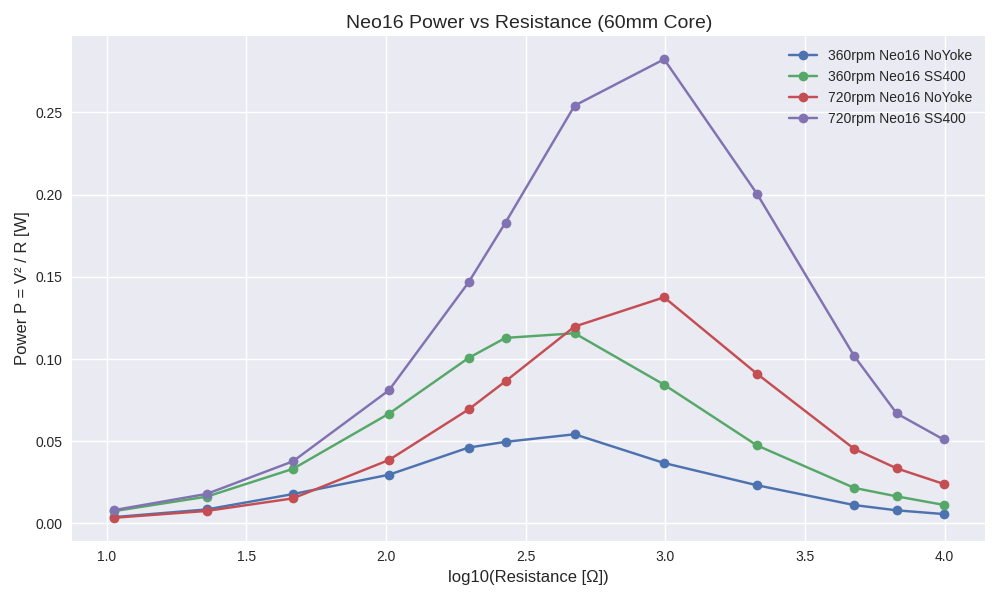
参考
LEDの抵抗は不明ですが、グラフを参照していただければ何となく予測がつくと思います
以下に動画を記載しましたが、videoフォルダー内に同様の動画がまだ有ります
ネオジム磁石Φ16ｔ2.5 コア60㎜ SS400 LED20個で41.2V発生
AIによる推定回転数：1300～1500r.p.m.
ネオジム磁石Φ16ｔ2.5 コア60㎜ 無し LED15個で30.5V発生
AIによる推定回転数：1500～1700r.p.m.
ネオジム磁石Φ10ｔ3 コア23㎜ SS400 LED2個で3.01V発生
AIによる推定回転数：400～450r.p.m.
ネオジム磁石Φ6ｔ3 コア60㎜ SS400 LED2個で3.61V発生
AIによる推定回転数：900～1000r.p.m.
フェライト磁石Φ18ｔ5 SS400 LED5個で9.11V発生
AIによる推定回転数：400～450r.p.m.
ネオジム磁石Φ6ｔ3 コア60㎜ 砂鉄 LED5個で9.52V発生
AIによる推定回転数：1700～1800r.p.m.
ネオジム磁石Φ16ｔ2.5 コア60㎜ SS400 100V5W球で22.41V発生
フェライト磁石Φ18ｔ5 コア60㎜ SS400 100V5W球で17.64V発生
大まかな構造
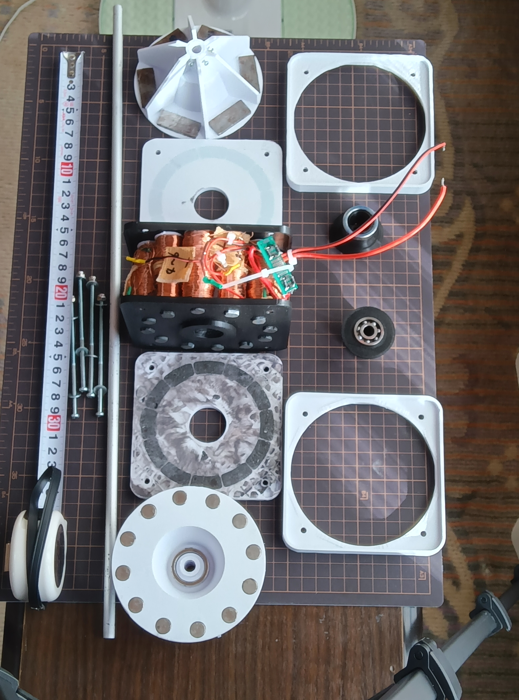
コイルと磁石の間のものがコギング抑制板です
フェライトロッドを砕いてエポキシ樹脂で固めたもの
磁石部
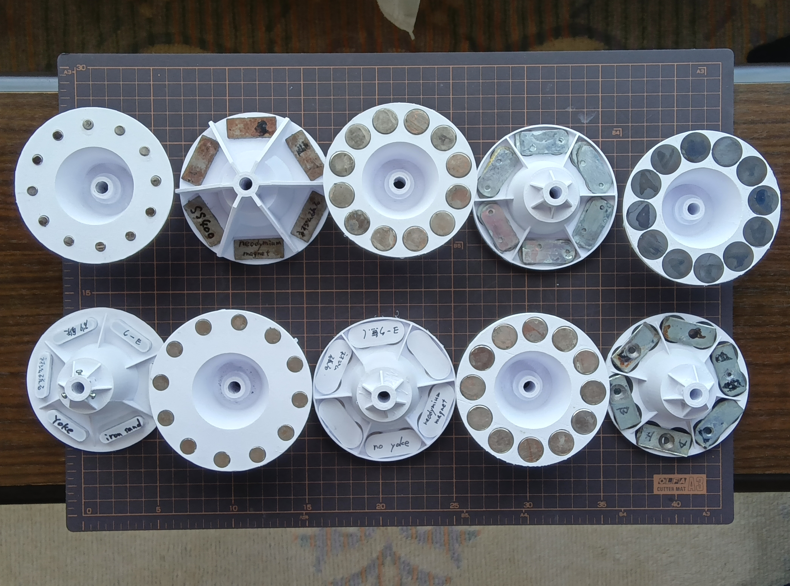
コイル、コギング抑制板
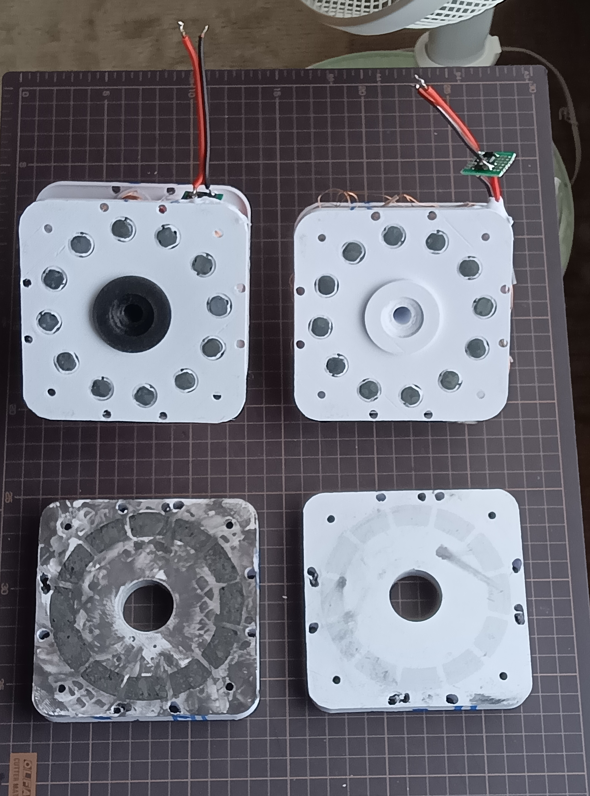
抵抗、LED、電球、手回し
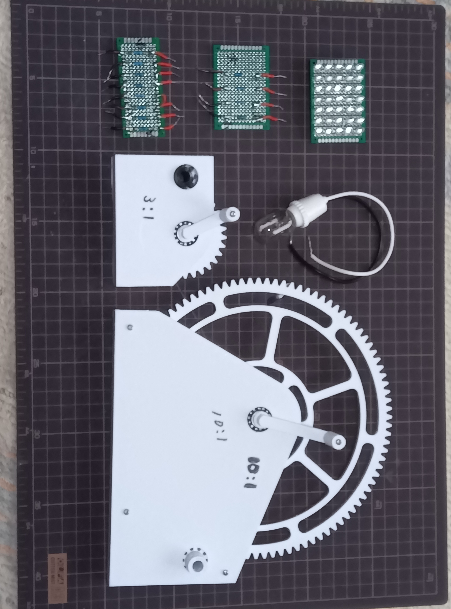
考察
磁石とコギング抑制板の距離のバラツキについて
この距離は「家庭用扇風機の強の風で回り始める」（φ6ネオジム
磁石を除く）ことを満たす最小距離としたためバラツキがでまし
た
この距離を小さくできないということは、コギングを少ししか抑
制できていないということです
コアの径と材質、コギング抑制板の材質と厚み（磁気容量）、磁
石の径と磁力の3つの調和がこの試作品では取れていません
これはφ10、φ16（ヨーク有）での発電量の差が小さいことからも
考えられます
コア、コギング抑制板、磁石の調和が取れればこの試作品より大き
な出力が見込めると考えています
抵抗値ー電圧のグラフより
抵抗値と電圧はほぼ比例関係にあり、コアが磁気飽和している兆
候は見られません
一方で、ポリウレタン線の抵抗が大きいため、内部抵抗の影響は
無視できないと考えています
抵抗値–電力グラフ（コア60㎜）より
現行の試作品でも水平軸型のプロペラを使用すれば、扇風機の風
のみで0.6Wは見込めると考えています
目標である垂直軸型では水平軸型の1/3程度の出力は可能と考え
ています
抵抗値–電力グラフ ヨークの有無による電力の比較より
磁石とコギング抑制板の距離は異なりますが、ヨークを付けるこ
とで、電力がほぼ2倍に増加しており、磁束の漏れを大幅に抑制す
る効果を確認できました
磁束の漏れが少ないので金属ケースに収めても渦電流による損失
殆どないと考えています
コアの長さが23㎜と60㎜を比較すると、最高出力に大きな差が無
いので、コアの長さを変えることで電圧型にも電流型にも調整可能
と考えています
発電部を二連、三連とすることで調整範囲は更に広がると考えてい
ます
実用化に向けて
磁束を無駄にしないために磁石とコギング抑制板の距離を小さく
できるようにコア、コギング抑制板の磁石の形状、材質、容積を
最も効率の良い組み合わせにする
各部品の強度、精度を上げる
試作品では磁石とコギング抑制板の距離が均一ではない
仕様を決めてそれに合うようコイルの本数、プロペラ、回路等を
調整
ネオジム磁石だけでなく、フェライト磁石での可能性を検討
ここまで入手が簡単で安価なもので試作、検証を続けてきましたが個人では限界を感じています
協力者を探してみましたが見つからず、いくつか支援機関にも問い合わせもしましたが条件が合わないようです
残念です
関連動画について
インスタグラムに過去の動画を投稿していますので興味のある方はご覧ください
#モバイル風力発電機 #マイクロ風力発電機 #家庭用風力発電機
でよく似た画像が見つかると思います
本サイトに掲載された設計、構造は個人の研究、実験目的で公開されたものであり、使用等に際して生じた損害、事故、その他全ての問題について一切の責任を負いかねます
動画を再生するにはHTML5をサポートしたブラウザーが必要です